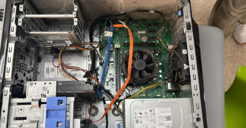
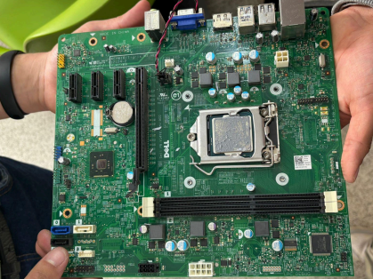

Bueno, para empezar, este proyecto consistía en realizar el mantenimiento completo de un equipo de cómputo, tanto en la parte física como en la documentación del proceso. La idea principal era aprender cómo desmontar correctamente una computadora, identificar sus componentes, darles mantenimiento preventivo y entender para qué sirve cada parte del equipo. Además de eso, también había que documentar absolutamente todo, desde el formulario de mantenimiento hasta las fotografías y la investigación de los componentes y circuitos integrados de la motherboard.
Sinceramente, al inicio parecía un proyecto sencillo porque uno piensa “solo es limpiar una computadora”, pero cuando empezamos a revisar todas las instrucciones nos dimos cuenta de que realmente llevaba bastante trabajo y organización. Primero había que conseguir todos los materiales necesarios, como el case con los componentes, herramientas para desarmar computadoras, aire comprimido, limpia contactos, espuma de limpieza, pasta térmica y hasta bolsas para proteger el escritorio mientras se hacía el mantenimiento.
Después tocó realizar el proceso de desmontar el equipo y revisar cada componente importante del CPU. Y sinceramente, ahí fue donde empezó el miedo de tocar algo que no debíamos y terminar dañando una pieza cara. Porque una cosa es ver videos de mantenimiento y otra muy diferente es tener la motherboard enfrente pensando “ojalá no arruine nada”.

Durante el mantenimiento también tuvimos que limpiar los componentes internos, revisar conexiones y aplicar pasta térmica al procesador para ayudar a mantener una mejor temperatura del equipo. Además, se tomaron fotografías de cada componente importante y del grupo realizando todo el proceso, porque prácticamente había que documentar cada paso del trabajo.
Otra parte bastante larga fue la investigación de los componentes de la computadora y los circuitos integrados de la motherboard. Tuvimos que investigar para qué sirve cada pieza, cómo funciona y cuál es su importancia dentro del equipo. Y sinceramente, fue ahí donde nos dimos cuenta de que una computadora tiene muchas más partes de las que normalmente uno imagina. Porque al final la mayoría solo usa la computadora sin pensar qué hace realmente cada componente para que todo funcione correctamente.
También aprendimos que darle mantenimiento a un equipo no solo sirve para “que se mire limpio”, sino para ayudar a que funcione mejor, evitar sobrecalentamientos y prolongar la vida útil de los componentes. ¿Cuántas personas usan su computadora todos los días sin nunca limpiarla o revisar cómo está funcionando internamente? Probablemente demasiadas.

Además, trabajar en grupo otra vez fue algo complicado por momentos, porque coordinar quién hacía cada parte, tomar fotos, investigar información y armar el documento terminó siendo más cansado de lo que parecía al principio. Había momentos donde ya nadie quería seguir escribiendo descripciones ni acomodando imágenes en Word, pero al final logramos completar todo el proyecto.
Y sinceramente, aunque terminó siendo bastante largo entre investigaciones, fotos, mantenimiento y documentación, creo que sí dejó aprendizaje útil, porque no solo entendimos mejor cómo funciona una computadora por dentro, sino también la importancia de darle mantenimiento y cuidar correctamente los equipos que usamos todos los días.